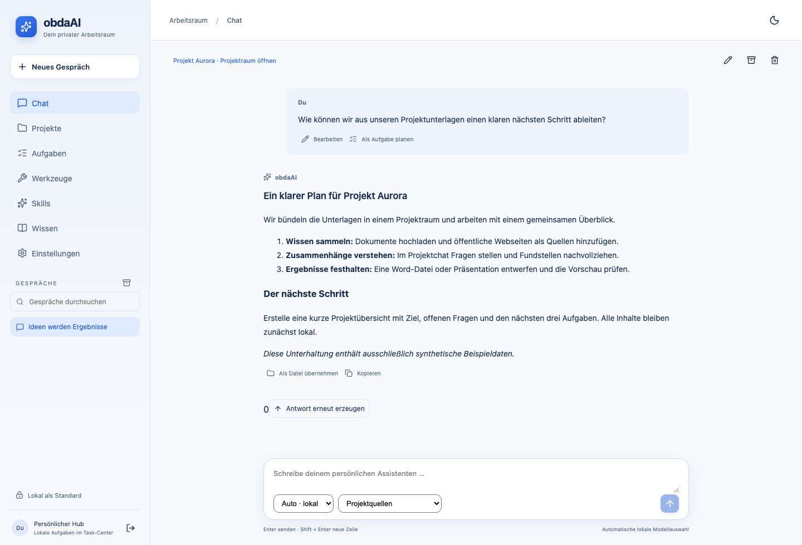
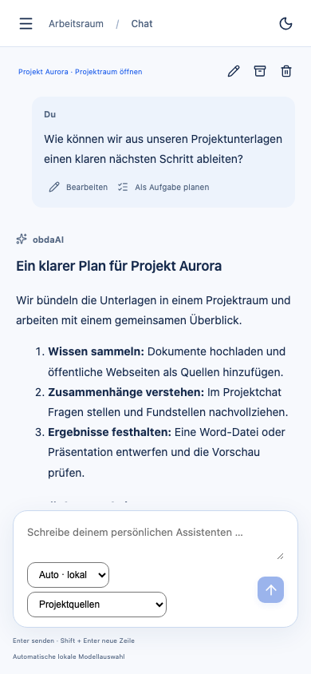

Wissen zusammenbringen.
Eigene Projekträume mit Dokumenten, Webseiten und frei konfigurierbaren Wissensquellen.
Projekte & QuellenSELBST GEHOSTET. LOKAL GEDACHT.
Ein Ort für Gespräche, Quellen, Dateien und Aufgaben. obdaAI verbindet dein Wissen mit KI – und lässt dir die Kontrolle darüber, was daraus wird.

VON EINER FRAGE ZU EINEM ERGEBNIS
Unterlagen sammeln, Fragen stellen, Ergebnisse gestalten und nächste Schritte planen. Alles bleibt in einem nachvollziehbaren Kontext.
Eigene Projekträume mit Dokumenten, Webseiten und frei konfigurierbaren Wissensquellen.
Projekte & QuellenLokaler Chat mit deinen Quellen, Fundstellen und klarer Modellwahl. Aus Antworten werden neue Ideen.
Chat & ModelleEditierbare Dateien mit Vorschau, erhaltenen Originalen und Versionen. Aufgaben mit sichtbaren Ergebnissen.
Dateien & GestaltungEINBLICKE IN DIE APP
Original-Screenshots der aktuellen Oberfläche. Alle gezeigten Inhalte stammen aus einer isolierten Demo mit synthetischen Beispieldaten.
Persistente Gespräche, Markdown und Modell- sowie Quellenwahl direkt im Eingabebereich.

AUCH IM KLEINEN FORMAT
Responsive Navigation und Quellenwahl direkt im Chat. Die mobile Oberfläche ist mit Chromium-Fixtures geprüft; reale Geräteabnahme bleibt offen.
DER FUNKTIONSKATALOG
Alle wesentlichen Funktionen im Überblick. Der Status unterscheidet dokumentierte Live-Prüfungen, implementierte Adapter und bewusst begrenzte Teilfunktionen.
* „Live geprüft“ bezeichnet dokumentierte, gezielte Abnahmefälle. Das bestätigt weder jede Eingabe noch allgemeine Faktentreue oder eine vollständig fertige V1. Adapter-, Fixture- und Geräteprüfungen bleiben getrennt.
DEINE DATEN. DEINE ENTSCHEIDUNG.
obdaAI beginnt mit LOCAL_ONLY. Quellen, Antworten und abgeleitete Dateien behalten ihre Datenschutzgrenzen. Externe Verarbeitung braucht eine konkrete Freigabe.
Datenschutz & BetriebKein stiller Cloudwechsel, wenn ein lokales Modell ausfällt.
Quellenrevisionen, Hashes und Belege binden Ergebnisse an ihre Grundlage.
Vorschauen vor Downloads. Konkrete Freigaben und eine globale Schreibpause für kontrollierte Aktionen.
TRANSPARENTER ENTWICKLUNGSSTAND
Die Anwendung ist auf einer eigenen VM installiert. M1 und M2 sind dokumentiert abgenommen; M3, M4 und M5 haben geprüfte Teilstände. V1 bleibt in Entwicklung.
Die ausgewählte Chatantwort wird zur Quelle einer lokalen Datei. Revision und Hashes werden erneut geprüft; manuelle Folgeversionen behalten ihren Herkunftsbeleg.
Bei Projektupdates werden Funktionen, Status und betroffene Screenshots gepflegt. GitHub Pages veröffentlicht den Website-Stand automatisch nach den Website-Prüfungen.